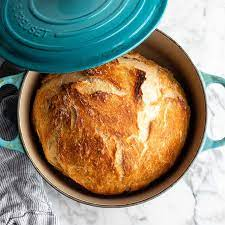

Bread Will Make You Sexier
Feel like you need to up your game? Are you getting first dates but not second dates? I have the answer: BREAD! Bread
will add that missing pizzaz to your dating life, it will give you that je ne sais quois that so many potential partners are
looking for.
Ingredients
- 2 cups lukewarm water
- 2 tsps active dry yeast
- 4 cups all-purpose flour
- 1 1/2 tsp salt
- 1 tsp olive oil
Steps
- Stir the yeast into the water and allow the yeast to bloom until foamy.
- In a large bowl, mix together the flour and salt by hand. Once incorporated, create a small well in the middle and pour in
the water and yeast mixture.
- Mix by hand, wetting your working hand before mixing so the dough doesn't stick to your fingers. The water and flour should
come together and a form rough dough that pulls away from the sides of the bowl. If the dough is too sticky, add more flour in small
increments, about 1 tablespoon at a time. If the dough is too dry, add more water, 1 tablespoon at a time.
- Once the dough comes together, cover and let rise until doubled in size (about 1 ½-2 hours).
- Uncover the dough and give it a few pokes with your finger. If the dough has risen properly, it should indent under the pressure of
your finger and slowly deflate.
- Using your hand or a rubber spatula, start from the rim of the bowl to work the dough loose from the sides and fold it up and towards
the center of the bowl. Turn the bowl 90 degrees, and repeat until all the dough has been pulled from the sides and folded towards the center.
- Once finished, cover and let the dough rise again for another 1 ½-2 hours.
- Once the dough has doubled in size again, gently transfer it from the bowl to a lightly floured surface.
- Sprinkle a bit of flour on top of the dough. Using your hands, begin to shape it into a loaf. Fold the dough under itself several times
to form a ball, then pinch together the seams of dough underneath.
- Place the dough seam-side down in a clean bowl that has been lightly coated with olive oil and dusted with flour.
- Cover and let rise for 1 hour.
- Meanwhile, place a 6-quart Dutch oven (or heavy cooking pot with oven-safe lid) inside the oven. Preheat the oven to 450˚F (230˚C)
with the pot inside for 45 minutes-1 hour.
- Carefully remove the pot from the oven and place it on a trivet or heat-safe surface.
- Turn the proofed dough over onto a lightly floured surface and carefully place it inside the pot.
- Cover with the lid and return the pot to the oven.
- Bake for 45 minutes, removing the lid for the last 15 minutes.
- Remove bread from pot, cover, and let cool for 10 minutes before slicing.